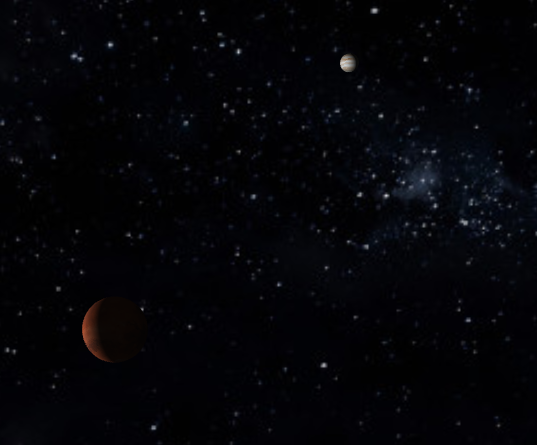
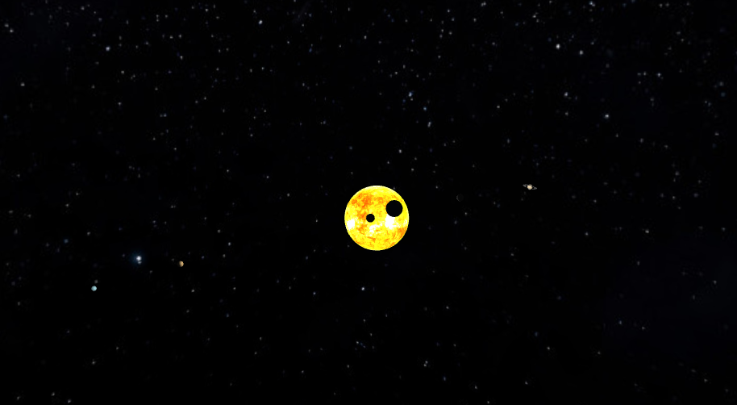
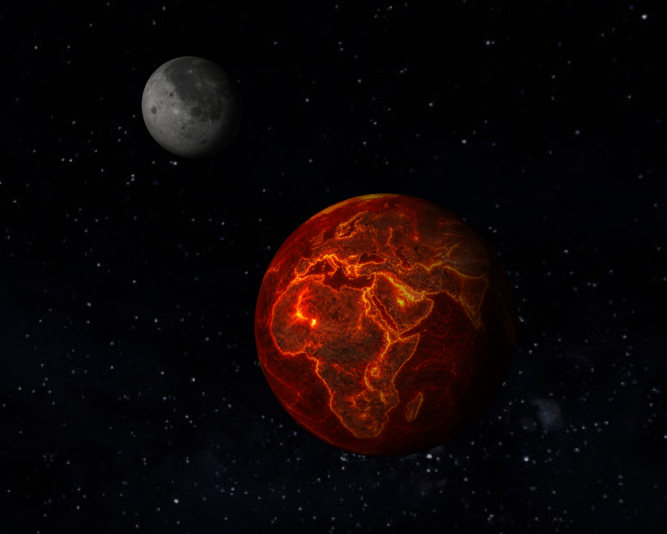
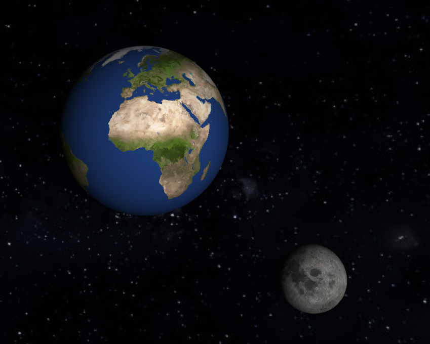
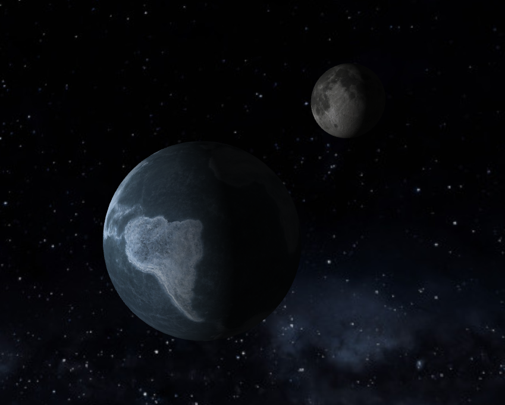

1. CONFIGURAZIONE
All'avvio della pagina, il browser esegue prima config.js, che definisce i parametri orbitali di tutti i pianeti (raggio, velocità angolare, inclinazione del piano orbitale), la geometria del cubo skybox e i 16 punti campione distribuiti sulla superficie solare con la distribuzione di Fibonacci, usati in seguito per simulare un'area light.
L’utilizzo del metodo di Fibonacci nasce dalla necessità di distribuire punti sulla superficie di una sfera nel modo più uniforme possibile in modo da ottenere un'illuminazione sui pianeti non proveniente da un'unica sorgente puntiforme centrata nel sole. Grazie a questo si riescono quindi ad ottenere aree di passaggio da superficie illuminata a superficie in ombra più morbide. Innanzitutto viene calcolato il golden angle (circa 137,5°), un angolo derivato dal rapporto aureo che permette di evitare l'allineamento dei punti. Successivamente, per ogni campione viene determinata una coordinata verticale y, distribuendo uniformemente i punti tra il polo nord e il polo sud della sfera. A partire da questa coordinata viene calcolato il raggio della circonferenza corrispondente alla latitudine considerata (rAt). L'angolo theta, ottenuto moltiplicando il golden angle per l'indice del punto, determina invece la posizione lungo tale circonferenza. Infine, le coordinate vengono convertite in coordinate cartesiane (x, y, z) e scalate in base al raggio della sfera.
Viene poi inizializzato il pannello di controllo interattivo tramite dat.GUI, che permette all'utente di modificare in tempo reale i parametri orbitali e il corpo celeste seguito dalla camera. Attraverso degli slider l’utente può intervenire in tempo reale sui principali parametri orbitali del pianeta Terra e del suo satellite (Luna), come velocità angolare, distanza dal Sole e inclinazione dell’orbita. Ogni modifica aggiorna immediatamente la scena. Il pannello gestisce inoltre il controllo della camera virtuale. Tramite un selettore è possibile scegliere quale corpo celeste seguire dinamicamente: la camera aggiorna quindi la propria posizione rispetto al pianeta selezionato, mantenendolo al centro della scena durante il moto orbitale. In questo modo l’utente può passare rapidamente da una visuale globale del sistema solare a una prospettiva ravvicinata di un singolo pianeta.
Nel programma è anche inclusa una funzione resize, che aggiorna la risoluzione effettiva del canvas in base alle sue dimensioni visualizzate nella pagina (clientWidth e clientHeight). Le dimensioni vengono moltiplicate per il valore di devicePixelRatio, permettendo di sfruttare correttamente i display ad alta densità di pixel (ad esempio schermi Retina), evitando immagini sfocate e migliorando la nitidezza del rendering. I valori ottenuti vengono assegnati agli attributi width e height del canvas, che determinano la reale risoluzione del framebuffer WebGL.
La pagina solar_system.html include inoltre il tag <meta name="viewport" content="width=device-width, initial-scale=1.0">, che imposta correttamente l'area visibile sui dispositivi mobili. In questo modo la larghezza della pagina coincide con quella del dispositivo e il livello di zoom iniziale viene mantenuto pari a 1, consentendo al canvas di adattarsi correttamente a schermi di dimensioni differenti. La combinazione tra viewport responsive, ridimensionamento del canvas e ricalcolo della matrice di proiezione garantisce una visualizzazione coerente della scena su desktop, tablet e smartphone.
2. COMPILAZIONE PROGRAMMI SHADER
Una volta che la pagina è caricata, main.js acquisisce il contesto WebGL dal canvas e compila tre programmi shader distinti:
- sphere per i pianeti, con illuminazione Phong multi-campione
- emissive per il Sole, che non riceve ombreggiatura
- skybox per lo sfondo cubemap della Via Lattea
La compilazione avviene leggendo il codice GLSL direttamente dagli script inline presenti nel DOM tramite le funzioni compileShaderSrc e createProgramFromIds.
La funzione compileShaderSrc si occupa della compilazione di un singolo shader. Riceve come parametri il contesto WebGL, il codice sorgente GLSL e il tipo di shader (VERTEX_SHADER oppure FRAGMENT_SHADER). Internamente:
a. crea un oggetto shader tramite gl.createShader()
b. associa il codice sorgente GLSL con gl.shaderSource()
c. avvia la compilazione mediante gl.compileShader()
La funzione createProgramFromIds opera invece a un livello superiore e costruisce un intero programma GPU partendo dagli identificatori degli script HTML che contengono gli shader. La funzione:
a. recupera dal DOM gli script contenenti vertex e fragment shader
b. estrae il testo GLSL tramite textContent
c. richiama compileShaderSrc per compilare entrambi gli shader
d. crea un programma WebGL con gl.createProgram()
e. collega gli shader tramite gl.attachShader()
f. effettua il linking con gl.linkProgram()
Dopo la creazione dei programmi shader, main.js recupera tutte le location di attributi e uniform necessari tramite funzioni come gl.getAttribLocation() e gl.getUniformLocation(). Gli attributi identificano dati per-vertice caricati nei buffer GPU, come posizione, normali e coordinate UV, mentre le uniform rappresentano variabili costanti durante il draw call, ad esempio matrici di trasformazione, posizione della camera, proprietà dei materiali e parametri dell’illuminazione.
Per il programma sphere, vengono recuperate uniform relative alle matrici model, view e projection, oltre ai vettori che rappresentano i campioni luminosi distribuiti sulla superficie del Sole tramite Fibonacci sampling. Il programma emissive utilizza invece un set ridotto di uniform, poiché il Sole viene renderizzato come sorgente autoilluminata senza calcolo di riflessione diffusa o speculare. Infine, il programma skybox richiede principalmente la cubemap texture e la matrice di vista privata della componente traslazionale, così da mantenere lo sfondo apparentemente infinito durante il movimento della camera.


3. CARICAMENTO MESH
Prima di avviare il loop di rendering, il programma carica in modo asincrono le mesh 3D di tutti gli undici corpi celesti (Sole, otto pianeti, Luna e anelli di Saturno). Per ciascuno, la funzione buildMeshGPU coordina l’intera pipeline di caricamento e preparazione delle risorse grafiche, utilizzando le utility definite nel modulo load2_mesh.js, responsabile della gestione dei modelli OBJ/MTL.
Il file OBJ viene richiesto via fetch e parsato tramite glmReadOBJ, funzione fornita da glm_utils.js. Questa funzione interpreta la struttura testuale del file .obj, estraendo vertici, normali e coordinate UV e organizzandoli in strutture dati.
Se è presente un file MTL associato, questo viene caricato tramite readMTLFile e successivamente parsato con glmReadMTL, che analizza i materiali definiti nel file .mtl. In particolare vengono recuperati i riferimenti alle texture diffuse (map_Kd) e speculari (map_Ks), utilizzate successivamente dagli shader per il calcolo dell’illuminazione e delle riflessioni superficiali.
Una volta completato il parsing, la mesh viene normalizzata attraverso la funzione Unitize, anch’essa implementata in glm_utils.js. Questa operazione ridimensiona e centra il modello all’interno di un cubo unitario, rendendo coerente la scala dei diversi corpi celesti indipendentemente dalle dimensioni originali dei file OBJ. Le diverse dimensioni dei corpi celesti saranno poi scelte in una fase successiva.
Durante la fase di caricamento delle texture, la funzione loadTexture crea inizialmente una texture temporanea di dimensione 1×1 pixel, evitando errori di rendering mentre l'immagine reale viene scaricata in background. Quando il caricamento termina, l'immagine viene trasferita nella memoria della GPU tramite gl.texImage2D. Se larghezza e altezza sono potenze di due vengono generate automaticamente le mipmap per migliorare la qualità del filtraggio a distanza; in caso contrario vengono utilizzati filtri lineari e modalità di wrapping compatibili con le limitazioni di WebGL 1.0.
Successivamente LoadMesh attraversa tutte le facce triangolari del modello e converte la rappresentazione indicizzata del file OBJ in array lineari continui. Per ogni triangolo vengono copiati i vertici, le coordinate texture e le normali negli array globali positions, texcoords e normals. Se il modello contiene normali per vertice, queste vengono utilizzate per ottenere un'illuminazione più morbida; in caso contrario vengono impiegate le normali di faccia calcolate automaticamente dalle utility di parsing.
In seguito i dati dei triangoli vengono convertiti in array lineari continui contenenti posizioni, normali e coordinate texture. Gli array ottenuti vengono quindi caricati sulla GPU tramite la funzione makeBuffer, che crea e inizializza i buffer WebGL mediante gl.createBuffer, gl.bindBuffer e gl.bufferData.
Infine buildMeshGPU raccoglie i riferimenti ai buffer appena creati, alle texture diffuse e speculari e ai parametri del materiale, restituendo una struttura dati completa che verrà utilizzata dal motore di rendering durante le draw call successive.
4. RENDERING
Il loop di rendering è scandito da requestAnimationFrame, che sincronizza l’aggiornamento della scena con il refresh rate del browser garantendo animazioni fluide ed efficienti. A ogni frame viene ricalcolata la matrice di proiezione prospettica in funzione dell’aspect ratio corrente del canvas, così da mantenere proporzioni corrette anche in caso di ridimensionamento della finestra.
Le posizioni di tutti i corpi vengono aggiornate chiamando computeOrbit, che calcola la posizione 3D su un'orbita circolare inclinata nello spazio. L’orbita viene parametrizzata utilizzando il tempo corrente e la velocità angolare definita in config.js. Per un’orbita circolare nel piano XZ, la posizione base viene ottenuta mediante funzioni trigonometriche:
x=rcos(ωt), z=rsin(ωt)
dove:
r rappresenta il raggio orbitale;
ω la velocità angolare;
t il tempo trascorso dall’avvio della simulazione.
Per simulare l’inclinazione orbitale dei pianeti, il vettore posizione ottenuto viene successivamente trasformato tramite una rotazione attorno all’asse X. L’inclinazione viene applicata mediante una matrice di rotazione.
Per ottenere una rotazione della Luna fisicamente corretta (ovvero che mostri sempre la stessa faccia rivolta verso la terra) si utilizza la posizione della Terra come centro dell'orbita. Questo comportamento si ottiene sincronizzando la velocità di rotazione della Luna attorno al proprio asse con la velocità della sua rivoluzione attorno alla Terra. In pratica, mentre la Luna percorre la propria orbita, viene applicata una rotazione interna dello stesso angolo orbitale, così che l’orientamento relativo rispetto alla Terra rimanga costante.
w = m4.multiply(w, m4.yRotation(-orbitAngle - Math.PI));
a. -orbitAngle: sincronizza la rotazione della Luna con la sua orbita (tidal locking), così ruota su sé stessa mentre gira attorno alla Terra e mantiene la stessa faccia rivolta verso di essa.
b. -Math.PI: corregge l’orientamento iniziale del modello 3D, perché la mesh della Luna è ruotata di 180° rispetto alla direzione attesa.
La camera viene aggiornata in base al corpo selezionato dall'utente e al vettore di pan accumulato.
Il rendering avviene nell'ordine: prima lo skybox (con il test di profondità impostato a LEQUAL per posizionarlo sempre dietro tutto il resto), poi il Sole con lo shader emissivo, infine ogni pianeta con drawPlanet, che costruisce la matrice world combinando traslazione, inclinazione assiale, rotazione propria e scala prima di inviare la draw call a WebGL.
La Terra dispone inoltre di tre texture intercambiabili (normale, lavica, glaciale) selezionate dinamicamente in base alla sua distanza dal Sole, aggiornata ogni frame da updateEarthTextureByDistance.
Incrementando o diminonuendo la distanza si modifica anche l'intensità della luce riflessa.



5. FUNZIONAMENTO DEGLI SHADER
Il sistema di rendering si basa su tre programmi shader scritti in GLSL: sphere, emissive e skybox. Gli shader rappresentano la parte del codice eseguita direttamente sulla GPU e determinano come ogni pixel e vertice viene trasformato e colorato.
Lo shader sphere utilizza un modello di illuminazione di tipo Phong. Il vertex shader si occupa di trasformare i vertici della mesh applicando le matrici model, view e projection, portando gli oggetti dallo spazio locale allo spazio schermo. Inoltre calcola e passa al fragment shader normali e coordinate necessarie per il calcolo della luce. Il fragment shader combina illuminazione diffusa e speculare utilizzando la posizione del Sole e i campioni luminosi generati con Fibonacci sampling, ottenendo un effetto di luce distribuita più morbido rispetto a una singola sorgente. Innanzitutto viene determinato il colore di base del frammento, prelevandolo dalla texture diffusa (map_Kd) oppure utilizzando un colore uniforme se la texture non è disponibile. Viene quindi aggiunto un contributo di luce ambientale costante per evitare zone completamente nere. Successivamente il contributo diffuso viene calcolato iterando sui 16 campioni luminosi del Sole: per ciascun campione si determina la direzione della luce, la distanza dal punto della superficie e un fattore di attenuazione, sommando poi il risultato tramite il prodotto scalare tra normale e direzione luminosa. La componente speculare viene invece calcolata in modo semplificato utilizzando un’unica sorgente luminosa equivalente posizionata al centro della scena (origine), corrispondente alla posizione del Sole. Viene quindi definita la direzione della luce come vettore dal frammento verso l’origine e costruito il vettore halfway tra osservatore e sorgente. L’intensità del riflesso dipende dalla distanza dal Sole e dalla mappa speculare (map_Ks), che agisce come maschera del materiale. Il parametro di brillantezza (shininess) viene adattato dinamicamente in base alla distanza per modulare la nitidezza dell’highlight. Infine i contributi ambientale, diffuso e speculare vengono combinati per ottenere il colore finale del frammento.
Lo shader emissive viene utilizzato esclusivamente per il Sole. In questo caso non viene applicato alcun modello di illuminazione: il fragment shader restituisce direttamente il colore della texture o un valore emissivo costante. Questo permette al Sole di apparire come una sorgente di luce autonoma, indipendente da ombre o riflessioni.
Lo shader skybox gestisce invece lo sfondo della scena. Il vertex shader mantiene la cubemap sempre centrata sulla camera, eliminando la componente di traslazione della vista per evitare che lo sfondo si muova con gli oggetti. Il fragment shader campiona la texture cubemap per ricreare l’immagine della Via Lattea attorno all’intera scena, dando l’illusione di uno spazio infinito.
In generale, gli shader ricevono dal programma principale tutte le informazioni necessarie tramite uniform, come matrici di trasformazione, posizione della camera e parametri di illuminazione, e restituiscono il colore finale di ogni frammento. Questo permette di eseguire la maggior parte dei calcoli grafici direttamente sulla GPU, mantenendo il rendering fluido anche con più oggetti in movimento simultaneo.